Example Parameters¶
0.1 Introduction¶
FAST is available to the public at https://github.com/stanford-futuredata/FAST as open-source software, and it will be released with a comprehensive user manual containing guidance for setting parameters. Interested users can run FAST to perform an uninformed search for earthquakes with similar waveforms on any seismic network, with varying duration of continuous data and number of stations. The FAST software has successfully detected earthquakes in the following data sets. FAST will only reach its full potential as a tool for seismological discovery if other users apply it to their own data sets (filling the N and T gaps in Figure 1) and improve the detection algorithms. Thank you to all collaborators and interested users who shared data, which was useful for testing the FAST software and identifying bug fixes, in preparation for its public release.
0.2 ItalyDayYR Data Set¶
Info
One day of continuous data, 2016-10-29 00:00:00 to 2016-10-29 23:59:59 UTC, at 22 stations in central Italy (Figure 2), used 22 channels (vertical component HHZ only on each channel) for detection, provided by Bill Ellsworth. This data records small earthquakes from a swarm in Central Italy during October 2016, that occurred between the Mw 6.1 earthquake on 2016-10-26 19:18:08 UTC and the Mw 6.6 Norcia earthquake on 2016-10-30 06:40:18 UTC.
0.2.1 Preprocessing¶
Output sample spectrograms on each channel and station to determine bandpass filter range:
Table S2: FAST input parameters for Italy earthquake detection: single-channel at 22 YR stations (Figure 2, black triangles), after bandpass filter 2-20 Hz, and decimate to 25 Hz. Total number of fingerprints: 71,989.
Table S3: Network detection input parameters for Italy earthquakes at 22 YR stations (HHZ channel only), after getting similar pairs of fingerprints from FAST for each station.
0.3 Tanzania, August 2016¶
Temporary dense deployment of seismic stations in Tanzania to identify previously unknown faults and infer their dimensions. 1 month continuous data (2016-07-31 to 2016-08-31), at 5 stations, 15 channels (3 components per station), provided by Laura Parisi of King Abdullah University of Science and Technology (KAUST). The stations are located about 10 km apart, at the base of a volcanic caldera called Ngorongoro Crater. For all 15 channels, we applied the following preprocessing: 4-12 Hz bandpass filter, then decimated to 25 Hz (factor of 8, from original 200 Hz); also, all time gaps with 0’s were filled with uncorrelated random noise (only on station CES04).
Table S4: FAST input parameters for Tanzania earthquake detection, applied to each component at all 5 stations. For the median statistics calculation (for wavelet coefficient selection), we randomly sampled 10% of the data, once per day. Total number of fingerprints (largest number over all channels): 2,231,989.
Table S5: Network detection input parameters for Tanzania earthquakes at 5 stations, after getting similar pairs of fingerprints from FAST for each station — added similarity from all 3 [HNE,HNN,HNZ] components at a given station and set station-pair threshold of (v=2)*(3 components) = 6.
Table S6: Final thresholds for Tanzania earthquakes, applied to network detection parameters nsta (number of stations that detected event pair) and peaksum (total similarity score at all stations) to determine list of earthquakes, set empirically after visual inspection. For each value of nsta, a different threshold for peaksum can be applied.
0.4 Saudi Arabia, May 2014¶
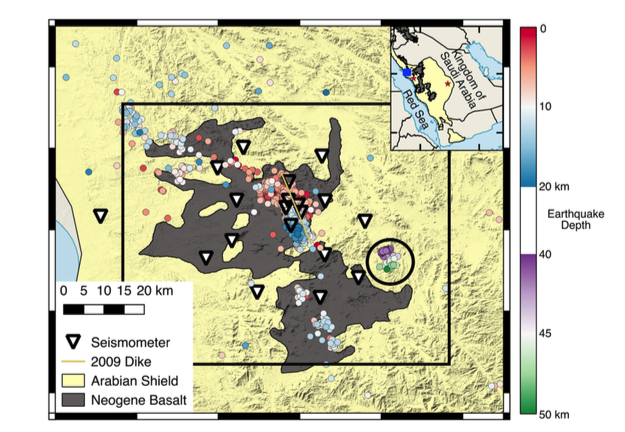
Info
Seismic network from Saudi Arabia to study dike swarms in volcanic area, and deep mantle earthquakes. 1 month continuous data (2014-05-01 to 2014-06-01), at 19 stations (Figure 5), 55 channels (3 components per station, except LNY11 where only HHN was used), provided by Alex Blanchette of Stanford Geophysics.
Table S7: Preprocessing parameters for Saudi Arabia May 2014 earthquake detection, for each station (same filter applied to all components), 1 month continuous data (2014-05-01 to 2014-06-01), at 19 stations, decimate to 25 Hz. Also, all time gaps with 0’s were filled with uncorrelated random noise. For station LNY11, only HHN component was used in similarity search, as the HHE and HHZ components had too much correlated noise.
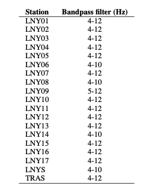
Table S8: FAST input parameters for Saudi Arabia May 2014 earthquake detection, applied to each component at each station. For the median statistics calculation (for wavelet coefficient selection), we randomly sampled 10% of the data, once per day. Total number of fingerprints (largest number over all channels): 2,231,989.
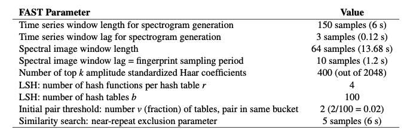
Table S9: Network detection input parameters for Saudi Arabia May 2014 earthquake detection at 19 stations, after getting similar pairs of fingerprints from FAST for each station — added similarity from all 3 [HHE,HHN,HHZ] components at a given station and set station-pair threshold of (v=2)*(3 components) = 6.
Table S10: Final thresholds for Saudi Arabia May 2014 earthquake detection, applied to network detection parameters nsta (number of stations that detected event pair) and peaksum (total similarity score at all stations) to determine list of earthquakes, set empirically after visual inspection. For each value of nsta, a different threshold for peaksum can be applied.
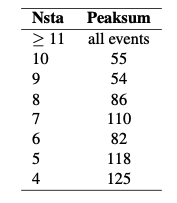
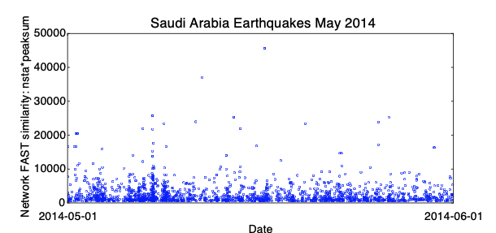
0.5 SaudiFull data set: Saudi Arabia, January - May 2017¶
- Location: Saudi Arabia, January - May 2017 (volcanic area with dikes)
- Duration: up to 5 months (151 days): 2017-01-01 to 2017-05-30
- Network: 36 stations, 3 components each (HHE, HHN, HHZ) = 106 channels. (Station SA.UMJ02: only HHE channel)
- Sampling rate: 100 Hz
- Provided by: Mohammad Youssof (KAUST)
0.5.1 Preprocessing¶
- Output continuous data duration: different stations used for detection have different durations and time gaps (need to modify paths in get_continuous_data_times.py):
The output files in continuous_duration/ can be read into a custom script called plot_continuous_ duration_SaudiFull.py to plot the duration of available continuous data at each station and channel (Figure 7).

- Detected zero-filled time-gap sections of continuous data in all 106 channels (need to modify paths in fill_ time_gaps_with_uncorrelated_noise.py), and filled them with random uncorrelated noise:
Only stations SA.UMJ03, SA.UMJ05, SA.UMJ08 had zero-filled time-gap sections, which were filled with random noise and saved as files starting with the Filled.* string. The majority of continuous data files had no zero-filled time gaps, so we used original mseed data files.
- Output sample spectrograms on each channel and station to determine bandpass filter range (need to modify paths in plot_sample_spectrograms.py):
- Apply bandpass filter and decimate (need to modify paths in bandpass_filter_decimate.py):
~/FAST/utils/preprocess/$ ../../parameters/preprocess/SaudiFull/bandpass_filter_decimate_SaudiFull.sh
Based on sample spectrograms, apply a station-specific bandpass filter (Table S11). Decimate by a factor of 2 to a sampling rate of 50 Hz. Filtered continuous data files start with Deci2.bpXtoY.*, where X is the lower frequency and Y is the higher frequency, which are input to the fingerprint step.
Table S11: Preprocessing parameters for SaudiFull earthquake detection, for each station (same filter applied to all components), 5 months continuous data (2017-01-01 to 2017-05-31), at 36 stations, decimate to 50 Hz.

0.5.2 Fingerprint¶
Master script to create fingerprints on each channel, then generate global indices at the end:
Example script to generate fingerprints on one channel (HHZ) at one station (LNY03), called by the master script run_fp_SaudiFull.sh:
~/FAST/fingerprint/$ python gen_fp.py ../parameters/fingerprint/SaudiFull/fp_input_SA_LNY03_HHZ.json
"fingerprint": {
"sampling_rate": 50,
"min_freq": 4.0,
"max_freq": 15.0,
"spec_length": 6.0,
"spec_lag": 0.12,
"fp_length": 64,
"fp_lag": 10,
"k_coef": 400,
"nfreq": 32,
"mad_sampling_rate": 0.1,
"mad_sample_interval": 86400
"data": {
"station": "LNY03",
"channel": "HHZ",
"start_time": "17-01-01T00:00:00.0",
"end_time": "17-05-31T00:00:00.0",
"folder": "/lfs/1/ceyoon/TimeSeries/SaudiFull/SA.LNY03/",
There are a total of 106 fp_input_NETWORK_STATION_CHANNEL.json fingerprint input files, one for each channel and station, all with the same input fingerprint parameters in Table S12.
Median/MAD output files: mad/mad*.txt
Table S12: Fingerprint input parameters for SaudiFull earthquake detection: 3-component at 36 stations (except for SA.UMJ02), after applying station-specific bandpass filter (Table S11), and sampled at 50 Hz. The fingerprint sampling period is dt_fp = 1.2 seconds.
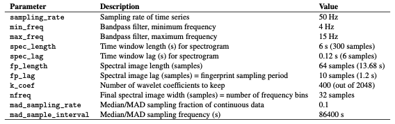
Fingerprints (binary files): fingerprints/LNY03.HHZ.fp
Timestamps at each fingerprint index (text files): timestamps/LNY03.HHZ.ts
Finally, to create global indices for the SaudiFull data set, so that fingerprint indices from different channels (all 106) and stations are referenced to a common starting time:
The common starting time is in global_idx_stats.txt: 2017-01-01T00:00:06.840000 UTC
0.5.3 Similarity Search¶
Master script to run similarity search on each channel (out of 106 total):
Table S13: Similarity search input parameters for SaudiFull earthquake detection: 106 channels at 36 stations (3 components each, except SA.UMJ02). The occurrence filter, specified by the FREQ_NOISE parameter, was applied only for selected stations and channels (Table S14).

Example script to run similarity search on one channel (HHZ) at one station (LNY03), called by the master script run_simsearch_SaudiFull.sh:
~/FAST/simsearch/$ ../parameters/simsearch/SaudiFull/simsearch_input_SaudiFull.sh LNY03 HHZ
NTBLS=100
NHASH=4
NREPEAT=5
NVOTES=2
NTHREAD=56
NUM_PART=1
We first ran similarity search with the same input parameters on all 106 channels, without the occurrence filter. For 18 selected channels (Table S14), where the candidate_pairs similarity search outputs were especially large because of correlated noise, we ran similarity search with the occurrence filter (FREQ_NOISE=0.01), which significantly reduced the similarity search output file sizes. A fingerprint that matches over 1% of other fingerprints is excluded from the similarity search, in order to avoid detecting noise that repeats often in time. For example, the occurrence filter was applied for station LNY01 channel HHZ by calling the script filt_simsearch_input_SaudiFull.sh from the master script run_simsearch_SaudiFull.sh:
~/FAST/simsearch/$ ../parameters/simsearch/SaudiFull/filt_simsearch_input_SaudiFull.sh LNY03 HHZ
NTBLS=100
NHASH=4
NREPEAT=5
NVOTES=2
NTHREAD=56
NUM_PART=1
FREQ_NOISE=0.01
Table S14: Selected stations and channels from SaudiFull data set where we applied the occurrence filter with FREQ_ NOISE=0.01.
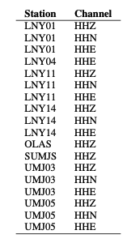
0.5.4 Postprocessing¶
First, run the master script to convert similarity search output from binary format to text format (3 columns: dt = idx1 − idx2, idx1, sim, sorted in increasing dt order) for each channel (106 total):
For example, on one channel (HHZ) at one station (LNY03), all on one line:
~/FAST/postprocessing/$ python parse_results.py
-d /lfs/1/ceyoon/TimeSeries/SaudiFull/SA.LNY03/fingerprints/
-p candidate_pairs_LNY03_HHZ -i /lfs/1/ceyoon/TimeSeries/SaudiFull/global_indices/LNY03_HHZ_idx_mapping.txt
Output file for example (large size at channel level): /lfs/1/ceyoon/TimeSeries/SaudiFull/SA.LNY03/fingerprints/candidate_pairs_LNY03_HHZ_merged.txt
Second, run the master script to combine similarity output from all 3 components at a given station, for all 36 stations:
Example
For example, on three channels (HHE, HHN, HHZ) at one station (LNY03), first move the similarity output text files to the inputs_network/ directory:
$ cd /lfs/1/ceyoon/TimeSeries/SaudiFull/SA.LNY03/fingerprints/
$ mv candidate_pairs_LNY03_HH*_merged.txt ../../../inputs_network/
Then for each similar fingerprint pair, add the similarity from all 3 components at the same station, with a similarity threshold of 6 = (3 components)*(v=2 votes/component, Table S13). Note: this step will delete the candidate_ pairs_LNY03_HH*_merged.txt files.
~/FAST/postprocessing/$ python parse_results.py
-d /lfs/1/ceyoon/TimeSeries/SaudiFull/inputs_network/
-p candidate_pairs_LNY03 --sort true --parse false -c true -t 6
Output file for example (smaller size at station level): /lfs/1/ceyoon/TimeSeries/SaudiFull/inputs_network/ candidate_pairs_LNY03_combined.txt
For station SA.UMJ02, which has only 1 component (HHE), multiply the similarity sim by 3 to give this station an equal weight as the other 3-component stations:
~/FAST/postprocessing/$ awk ’{print $1, $2, 3*$3}’
/lfs/1/ceyoon/TimeSeries/SaudiFull/SA.UMJ02/fingerprints/candidate_pairs_UMJ02_HHE_merged.txt
> /lfs/1/ceyoon/TimeSeries/SaudiFull/SA.UMJ02/fingerprints/candidate_pairs_UMJ02_combined.txt
Finally, detect similar fingerprints across the network of 36 stations, using the input parameters in Table S15:
~/FAST/postprocessing/$
python scr_run_network_det.py ../parameters/postprocess/SaudiFull/36sta_3stathresh_network_params.json
"network": {
"max_fp": 10736786,
"dt_fp": 1.2, (seconds)
"dgapL": 10, (12 s)
"dgapW": 3, (3.6 s)
"num_pass": 2,
"min_dets": 3,
"min_sum_multiplier": 1,
"max_width": 8, (9.6 s)
"ivals_thresh": 6,
"nsta_thresh": 3,
"input_offset": 15 (18 s)
},
Network detection output file for example (smaller size at station level): /lfs/1/ceyoon/TimeSeries/SaudiFull/ network_detection/36sta_3stathresh_detlist_rank_by_peaksum.txt (21,498 events)
At this point, FAST earthquake detection processing is done.
Table S15: Network detection input parameters for SaudiFull at 36 stations. max_fp = 10736786 is the largest fingerprint index over all channels from *mapping.txt files in the global_indices directory. dt_fp = 1.2 seconds is the fingerprint sampling period from Table S12.
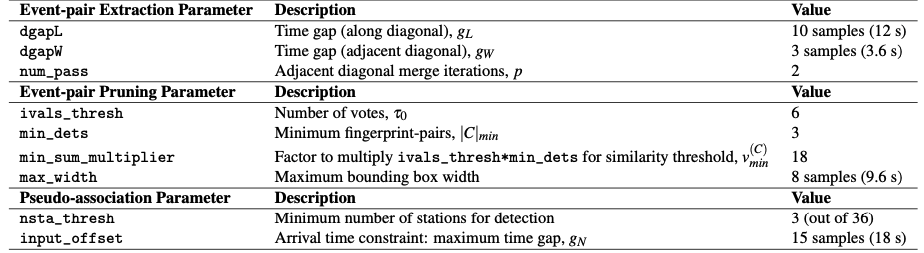
0.5.5 Remove Duplicates After Network Detection¶
Info
The network detection output still contains many duplicate events, so we need to remove these using a few scripts, where you need to modify the hard-coded paths. (These are scripts I quickly came up with on the fly to help me analyze the detection output. Feel free to come up with improved scripts that would better suit your needs.)
First, save only first and last time indices for each detection. For the last 2 columns: output the number of stations that detected event (num_sta) and difference between first and last index (diff_ind).
Output: NetworkDetectionTimes_36sta_3stathresh_detlist_rank_by_peaksum.txt (21,498 events)
Second, remove duplicate events. First remove events with exact first and last detection time indices. Then remove events with duplicate start times; for each start time, keep only the event with the highest num_sta (number of stations that detected the event) and peaksum (peak similarity).
Output: uniquestart_sorted_no_duplicates.txt (15,054 events)
Third, remove events that overlap between the first and last detection time indices, keeping the event with the highest num_sta and peaksum.
Output: 36sta_3stathresh_FinalUniqueNetworkDetectionTimes.txt (11,597 events)
Fourth, since different channels in the network have different durations (for example, in Figure 7, stations UMJ01-UMJ12 were active only during May 2017, while many of the other stations were active from January to May 2017), we calculate a normalized measure of the number of stations that detected the event: frac_ch, which is the fraction of channels that were active at each detection time. This is done by reading in files that were generated during preprocessing by get_continuous_data_times.py. This normalization step would not be necessary if all stations and channels in the network recorded the same duration of data.
Output: 36sta_3stathresh_ChannelCount_FinalUniqueNetworkDetectionTimes.txt (11,597 events)
Finally, sort remaining events in descending order of num_sta, then frac_ch, then peaksum, for the final detection list.
Output: sort_nsta_peaksum_36sta_3stathresh_ChannelCount_FinalUniqueNetworkDetectionTimes.txt (11,597 events)
0.5.6 Visual Inspection and Final Detections¶
Plot event waveforms in the final detection list, ranked in descending order of num_sta, then peaksum, for visual inspection. Need to verify by looking at the waveforms that these are indeed earthquakes, and also enables setting final detection thresholds (Table S16).
Output: .png image files in 36sta_3stathresh_NetworkWaveformPlots/
Table S16: Final thresholds for SaudiFull applied to network detection parameters num_sta (number of stations that detected event pair) and peaksum (total similarity score at all stations) to determine list of earthquakes, set empirically after visual inspection. For each value of num_sta, a different threshold for peaksum can be applied.
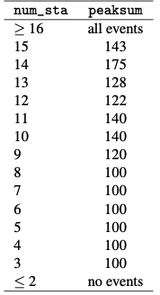
After visual inspection, 4634 events are above thresholds in Table S16.
EQ_sort_nsta_peaksum_36sta_3stathresh_ChannelCount_FinalUniqueNetworkDetectionTimes.txt: 4543 events that look like earthquake waveformsFALSE_sort_nsta_peaksum_36sta_3stathresh_ChannelCount_FinalUniqueNetworkDetectionTimes.txt: 91 false detections above thresholds that do not look like earthquakes
For the 4543 earthquake events, output an event catalog (Figure 8):
Output: FINAL_Detection_List_SaudiFull_36sta_3stathresh.txt (4543 events)
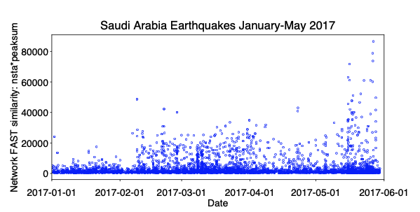
0.6 Ometepec, Mexico, January - April 2012¶
Info
The objective of this study is to identify repeating earthquake sequences as tools to measure deep aseismic slip rates [Dominguez et al., 2016], and characterize the unusually active aftershock sequence of the Mw 7.5 Omepetec, Mexico earthquake on 2012-03-20 [UNAM, 2013] (Figure 9). 112 days of continuous data (2012-01-01 to 2012-04-21) at 1 station, 3 components, provided by Luis Dominguez of Universidad Nacional Autonoma de Mexico (UNAM)-Morelia. For all 3 channels, I applied a 3-20 Hz bandpass filter, and kept the original sampling rate of 100 Hz.
FAST detected a total of 31,970 earthquakes during these 4 months. 30,923 were earthquakes (Figure 10), and 1,047 were noise, as determined by visual inspection. ***NOTE: postprocessing and elimination of duplicate detection pairs was done with the old MATLAB code from [Yoon et al., 2015] and [Yoon et al., 2017]. Single-station event-pair extraction with network FAST was not yet available. These were the events I sent to Luis, who performed single-station location using P-wave polarization analysis (Figure 10).
Table S17: FAST input parameters for Ometepec, Mexico earthquake detection, applied to each component at station IG.PNIG. For the median statistics calculation (for wavelet coefficient selection), we randomly sampled 10% of the data, once per day. Total number of fingerprints (largest number over all channels): 4,795,140.

0.7 SeismOlympics: Wenchuan Aftershocks¶
Info
Alibaba Cloud and the China Earthquake Administration sponsored a ”SeismOlympics” programming competition to detect aftershocks of the deadly May 12, 2008 Mw 7.9 Wenchuan, China, earthquake [Fang et al., 2017], similar to the Netflix Prize or the Kaggle data science competitions. Competitors from seismology, machine learning, signal processing, computer science, and other backgrounds developed algorithms that automatically detect and pick phases on aftershock waveforms while avoiding false positive detections. Performance was evaluated against phases picked by human analysts. This was a great opportunity to test how the FAST earthquake detection algorithm measured up against other methods. Other members of my team, all from Stanford Geophysics (Mostafa Mousavi, Yixiao Sheng, Weiqiang Zhu) used machine learning to pick phases and recognize false detections. We finished in 27th place in the first round of competition, and 16th place in the second round.
After the competition, I applied FAST to detect earthquakes within the entire continuous data set provided in both rounds of competition. 3 months of seismic data: April 1-22, 2008 (foreshocks), July 1-August 31, 2008 (aftershocks), at 15 stations (Figure 11) with 3 components each, although some stations only have data for part of this time. For all 45 channels, I applied the following preprocessing: 1-20 Hz bandpass filter, then decimated to 50 Hz (factor of 2, from original 100 Hz); also, all time gaps with 0’s were filled with uncorrelated random noise. FAST detected about 12,000 earthquakes; some of them are teleseismic because the 1-20 Hz filter includes lower frequencies.
Table S18: FAST input parameters for Wenchuan 2008 aftershock detection, applied to each component at each station. For the median statistics calculation (for wavelet coefficient selection), we randomly sampled 10% of the data, once per day. Total number of fingerprints (largest number over all channels): 3,612,972.
Table S19: Network detection input parameters for Wenchuan 2008 aftershock detection at 15 stations, after getting similar pairs of fingerprints from FAST for each station — added similarity from all 3 [HHE,HHN,HHZ] components at a given station and set station-pair threshold of (v=2)*(3 components) = 6.
Table S20: Final thresholds for Wenchuan 2008 aftershock detection applied to network detection parameters nsta (number of stations that detected event pair) and peaksum (total similarity score at all stations) to determine list of earthquakes, set empirically after visual inspection. For each value of nsta, a different threshold for peaksum can be applied.
0.8 Groningen Data Set¶
- Location: Netherlands (gas production field)
- Duration: 4 months (119 days): 2018-01-01 to 2018-04-30
- Network: 67 stations (Figure 12), 3 components each (HH1, HH2, HHZ) = 201 channels. (Station G294 not used for detection due to short duration)
- Sampling rate: 20 Hz (already downsampled)
- Provided by: Zack Spica (Stanford Geophysics)

0.8.1 Preprocessing¶
- Output continuous data duration: different stations used for detection have different durations and time gaps (need to modify paths in get_continuous_data_times.py):
The output files in continuous_duration/ can be read into a custom script called plot_continuous_ duration_Groningen.py to plot the duration of available continuous data at each station and channel (Figure 13).
- Confirmed no zero-filled time-gap sections of continuous data in all 201 channels (need to modify paths in fill_time_gaps_with_uncorrelated_noise.py):
- Output sample spectrograms on each channel and station to determine bandpass filter range (need to modify paths in plot_sample_spectrograms.py):
- Apply bandpass filter and decimate (need to modify paths in bandpass_filter_decimate.py):
~/FAST/utils/preprocess/$ ../../parameters/preprocess/Groningen/bandpass_filter_decimate_Groningen.sh
Based on sample spectrograms, filter 3-10 Hz for all 201 channels. No need to decimate, as sampling rate is already low at 20 Hz. Filtered continuous data files start with Deci1.bp3to10.*, which are input to the fingerprint step.
0.8.2 Fingerprint¶
Master script to create fingerprints on each channel, then generate global indices at the end:
Example script to generate fingerprints on one channel (HHZ) at one station (G014), called by the master script run_fp_Groningen.sh:~/FAST/fingerprint/$ python gen_fp.py ../parameters/fingerprint/Groningen/fp_input_NL_G014_HHZ.json
"fingerprint": {
"sampling_rate": 20,
"min_freq": 3.0,
"max_freq": 10.0,
"spec_length": 6.0,
"spec_lag": 0.12,
"fp_length": 64,
"fp_lag": 10,
"k_coef": 400,
"nfreq": 32,
"mad_sampling_rate": 0.05,
"mad_sample_interval": 86400
"data": {
"station": "G014",
"channel": "HHZ",
"start_time": "18-01-01T00:00:00.0",
"end_time": "18-04-30T00:00:00.0",
"folder": "/lfs/1/ceyoon/TimeSeries/Groningen/data/waveformsG014/",
There are a total of 201 fp_input_NETWORK_STATION_CHANNEL.json fingerprint input files, one for each channel and station, all with the same input fingerprint parameters in Table S21.
Table S21: Fingerprint input parameters for Groningen earthquake detection: 3-component at 67 stations (Figure 12, red, black triangles), after bandpass filter 3-10 Hz, and sampled at 20 Hz. The fingerprint sampling period is dt_fp = 1.5 seconds.
Median/MAD output files: mad/mad*.txt
Fingerprints (binary files): fingerprints/G014.HHZ.fp
Timestamps at each fingerprint index (text files): timestamps/G014.HHZ.ts
Finally, to create global indices for the Groningen data set, so that fingerprint indices from different channels (all 201) and stations are referenced to a common starting time:
The common starting time is in global_idx_stats.txt: 2018-01-01T00:00:04.500000 UTC
0.8.3 Similarity Search¶
Master script to run similarity search on each channel (out of 201 total):
Table S22: Similarity search input parameters for Groningen earthquake detection: 201 channels at 67 stations (3 components each).
Example script to run similarity search on one channel (HHZ) at one station (G014), called by the master script run_simsearch_Groningen.sh:
~/FAST/simsearch/$ ../parameters/simsearch/Groningen/filt_simsearch_input_Groningen.sh G014 HHZ
NTBLS=100
NHASH=5
NREPEAT=5
NVOTES=2
NTHREAD=56
NUM_PART=1
FREQ_NOISE=0.01
Similarity search is run with the occurrence filter (FREQ_NOISE=0.01) for all 201 channels. A fingerprint that matches over 1% of other fingerprints is excluded from the similarity search, in order to avoid detecting noise that repeats often in time. The same input parameters are used for similarity search on all 201 channels (Table S22).
0.8.4 Postprocessing¶
First, run the master script to convert similarity search output from binary format to text format (3 columns: dt = idx1 − idx2, idx1, sim, sorted in increasing dt order) for each channel (201 total):
For example, on one channel (HHZ) at one station (G014), all on one line:
~/FAST/postprocessing/$ python parse_results.py
-d /lfs/1/ceyoon/TimeSeries/Groningen/data/waveformsG014/fingerprints/
-p candidate_pairs_G014_HHZ -i /lfs/1/ceyoon/TimeSeries/Groningen/global_indices/G014_HHZ_idx_mapping.txt
Output file for example (large size at channel level): /lfs/1/ceyoon/TimeSeries/Groningen/data/waveformsG014/ fingerprints/candidate_pairs_G014_HHZ_merged.txt
Second, run the master script to combine similarity output from all 3 components at a given station, for all 67 stations:
For example, on three channels (HH1, HH2, HHZ) at one station (G014), first move the similarity output text files to the inputs_network/ directory:
$ cd /lfs/1/ceyoon/TimeSeries/Groningen/data/waveformsG014/fingerprints/
$ mv candidate_pairs_G014_HH*_merged.txt ../../../inputs_network/
Then for each similar fingerprint pair, add the similarity from all 3 components at the same station, with a similarity threshold of 6 = (3 components)(v=2 votes/component, Table S22). Note: this step will delete the candidate_ pairs_G014_HH_merged.txt files.
~/FAST/postprocessing/$ python parse_results.py
-d /lfs/1/ceyoon/TimeSeries/Groningen/inputs_network/
-p candidate_pairs_G014 --sort true --parse false -c true -t 6
Output file for example (smaller size at station level):/lfs/1/ceyoon/TimeSeries/Groningen/inputs_network/ candidate_pairs_G014_combined.txt
Finally, detect similar fingerprints across the network of 67 stations, using the input parameters in Table S23:
~/FAST/postprocessing/$
python scr_run_network_det.py ../parameters/postprocess/Groningen/67sta_3stathresh_network_params.json
"network": {
"max_fp": 6798013,
"dt_fp": 1.5, (seconds)
"dgapL": 10, (15 s)
"dgapW": 3, (4.5 s)
"num_pass": 2,
28
},
Table S23: Network detection input parameters for Groningen at 67 stations. max_fp = 6798013 is the largest fingerprint index over all channels from *mapping.txt files in the global_indices directory. dt_fp = 1.5 seconds is the fingerprint sampling period from Table S21.
Network detection output file for example (smaller size at station level): /lfs/1/ceyoon/TimeSeries/Groningen/ network_detection/67sta_3stathresh_detlist_rank_by_peaksum.txt (118,728 events)
At this point, FAST earthquake detection processing is done.
0.8.5 Remove duplicates after network detection¶
The network detection output still contains many duplicate events, so we need to remove these using a few scripts, where you need to modify the hard-coded paths. (These are scripts I quickly came up with on the fly to help me analyze the detection output. Feel free to come up with improved scripts that would better suit your needs.)
First, save only first and last time indices for each detection. For the last 2 columns: output the number of stations that detected event (num_sta) and difference between first and last index (diff_ind).
Output: NetworkDetectionTimes_67sta_3stathresh_detlist_rank_by_peaksum.txt (118,728 events)
Second, remove duplicate events. First remove events with exact first and last detection time indices. Then remove events with duplicate start times; for each start time, keep only the event with the highest num_sta (number of stations that detected the event) and peaksum (peak similarity).
Output: uniquestart_sorted_no_duplicates.txt (13,782 events)
Third, remove events that overlap between the first and last detection time indices, keeping the event with the highest num_sta and peaksum.
Output: 67sta_3stathresh_FinalUniqueNetworkDetectionTimes.txt (6277 events)
Finally, sort remaining events in descending order of num_sta, then peaksum, for the final detection list.
Output: sort_nsta_peaksum_67sta_3stathresh_FinalUniqueNetworkDetectionTimes.txt (6277 events)
0.8.6 Visual inspection and final detections¶
Plot event waveforms in the final detection list, ranked in descending order of num_sta, then peaksum, for visual inspection. Need to verify by looking at the waveforms that these are indeed earthquakes, and also enables setting final detection thresholds (Table 0.8.6).
Output: .png image files in 67sta_3stathresh_NetworkWaveformPlots/
Table S24: Final thresholds for Groningen applied to network detection parameters num_sta (number of stations that detected event pair) and peaksum (total similarity score at all stations) to determine list of earthquakes, set empirically after visual inspection. For each value of num_sta, a different threshold for peaksum can be applied.
After visual inspection, 26 events are above thresholds in Table 0.8.6.
EQ_sort_nsta_peaksum_67sta_3stathresh_FinalUniqueNetworkDetectionTimes.txt: 23 events that look like earthquake waveformsFALSE_sort_nsta_peaksum_67sta_3stathresh_FinalUniqueNetworkDetectionTimes.txt: 3 false detections above thresholds that do not look like earthquakes
For the 23 earthquake events, output an event catalog:
Output: FINAL_Detection_List_Groningen_67sta_13stathresh.txt (23 events)
0.9 BrazilAcre Data Set¶
- Location: Acre, Brazil (search for intermediate-depth and deep earthquakes)
- Duration: about 3 months (with time gaps): 2015-05-28 to 2016-02-01
- Network: 1 station (Figure 14), 3 components (HHE, HHN, HHZ) = 3 channels. • Sampling rate: 100 Hz
- Provided by: Marcelo de Bianchi (University of Sao Paulo)
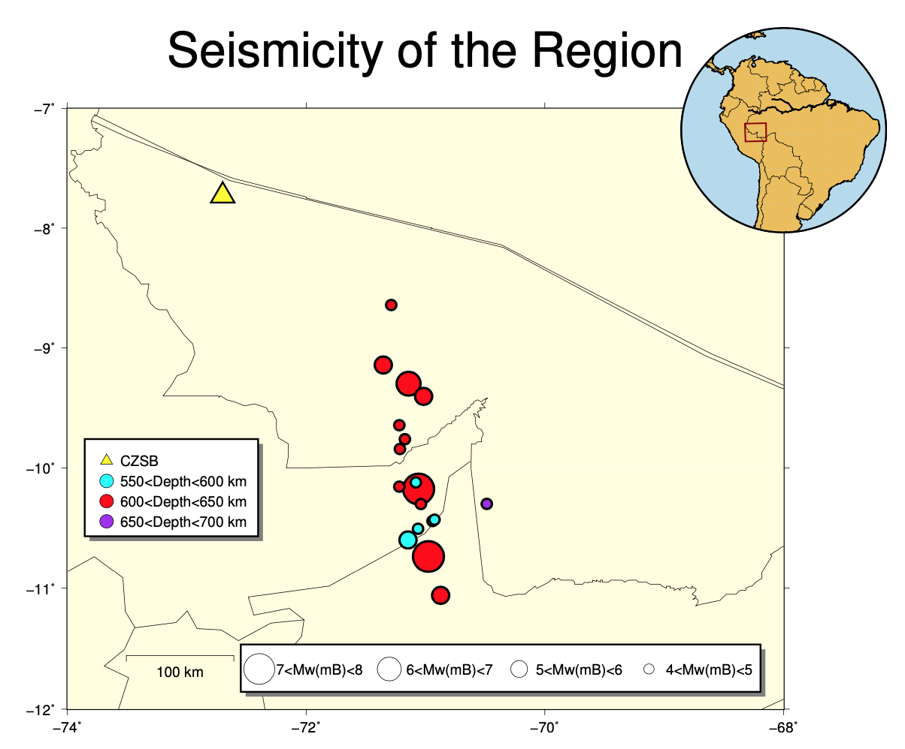
0.9.1 Preprocessing¶
- Output continuous data duration: different stations used for detection have different durations and time gaps (need to modify paths in get_continuous_data_times.py):
~/FAST/utils/preprocess/$ ../../parameters/preprocess/BrazilAcre/continuous_data_times_BrazilAcre.sh
The output files in continuous_duration/ can be read into a custom script called plot_continuous_ duration_BrazilAcre.py to plot the duration of available continuous data at each station and channel (Figure 15).
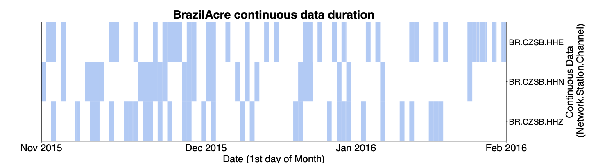
- Confirmed no zero-filled time-gap sections of continuous data in all 3 channels (need to modify paths in fill_ time_gaps_with_uncorrelated_noise.py):
Use original mseed data files.
- Output sample spectrograms on each channel and station to determine bandpass filter range (need to modify paths in plot_sample_spectrograms.py):
- Apply bandpass filter and decimate (need to modify paths in bandpass_filter_decimate.py):
~/FAST/utils/preprocess/$ ../../parameters/preprocess/BrazilAcre/bandpass_filter_decimate_BrazilAcre.sh
Based on sample spectrograms, filter 3-20 Hz for all 3 channels. Decimate by a factor of 2, to 50 Hz sampling rate. Filtered continuous data files start with Deci2.bp3to20.*, which are input to the fingerprint step.
- Need to add
.mseedextension to all time series files, otherwise the Julian day number in the time series file gets removed while fingerprinting, and we cannot tell the difference between fingerprints from different days.
0.9.2 Fingerprint¶
Master script to create fingerprints on each channel, then generate global indices at the end:
Example script to generate fingerprints on one channel (HHE) at one station (CZSB), called by the master script run_fp_BrazilAcre.sh:
~/FAST/fingerprint/$ python gen_fp.py ../parameters/fingerprint/BrazilAcre/fp_input_BR_CZSB_HHE.json
"fingerprint": {
"sampling_rate": 50,
"min_freq": 3.0,
"max_freq": 20.0,
"spec_length": 10.0,
"spec_lag": 0.2,
"fp_length": 128,
Continuous Data (Network.Station.Channel)
"fp_lag": 10,
"k_coef": 800,
"nfreq": 32,
"mad_sampling_rate": 0.1,
"mad_sample_interval": 86400
"data": {
"station": "CZSB",
"channel": "HHE",
"start_time": "15-10-28T00:00:00.0",
"end_time": "16-02-01T00:00:03.0",
"folder": "/lfs/1/ceyoon/TimeSeries/BrazilAcre/CZSB/",
There are a total of 3 fp_input_NETWORK_STATION_CHANNEL.json fingerprint input files, one for each channel and station, all with the same input fingerprint parameters in Table S25.
Table S25: Fingerprint input parameters for BrazilAcre earthquake detection: 3-component at 1 station (Figure 14, yellow triangle), after bandpass filter 3-20 Hz, and decimated to 50 Hz sampling rate. The fingerprint sampling period is dt_fp = 2 seconds.

Median/MAD output files: mad/mad*.txt
Fingerprints (binary files): fingerprints/CZSB.HHE.fp
Timestamps at each fingerprint index (text files): timestamps/CZSB.HHE.ts
Finally, to create global indices for the BrazilAcre data set, so that fingerprint indices from different channels (all 3) and stations are referenced to a common starting time:
The common starting time is in global_idx_stats.txt: 2015-10-28T00:00:21.340000 UTC
0.9.3 Similarity Search¶
Master script to run similarity search on each channel (out of 3 total):
Example script to run similarity search on one channel (HHE) at one station (CZSB), called by the master script run_simsearch_BrazilAcre.sh:
~/FAST/simsearch/$ ../parameters/simsearch/BrazilAcre/filt_simsearch_input_BrazilAcre.sh CZSB HHE
NTBLS=100
NHASH=4
NREPEAT=5
NVOTES=2
NTHREAD=56
NUM_PART=1
Table S26: Similarity search input parameters for BrazilAcre earthquake detection: 3 channels at 1 station (3 components each).

The same input parameters are used for similarity search on all 3 channels (Table S26).
0.9.4 Postprocessing¶
First, run the master script to convert similarity search output from binary format to text format (3 columns: dt = idx1 − idx2, idx1, sim, sorted in increasing dt order) for each channel (3 total):
For example, on one channel (HHE) at one station (CZSB), all on one line:
~/FAST/postprocessing/$ python parse_results.py
-d /lfs/1/ceyoon/TimeSeries/BrazilAcre/CZSB/fingerprints/
-p candidate_pairs_CZSB_HHE -i /lfs/1/ceyoon/TimeSeries/BrazilAcre/global_indices/CZSB_HHE_idx_mapping.txt
Output file for example (large size at channel level): /lfs/1/ceyoon/TimeSeries/BrazilAcre/CZSB/fingerprints/ candidate_pairs_CZSB_HHE_merged.txt
Second, run the master script to combine similarity output from all 3 components at a given station, for 1 station:
For example, on three channels (HHE, HHN, HHZ) at one station (CZSB), first move the similarity output text files to the inputs_network/ directory:
$ cd /lfs/1/ceyoon/TimeSeries/BrazilAcre/CZSB/fingerprints/
$ mv candidate_pairs_CZSB_HH*_merged.txt ../../../inputs_network/
Then for each similar fingerprint pair, add the similarity from all 3 components at the same station, with a similarity threshold of 6 = (3 components)*(v=2 votes/component, Table S26). Note: this step will delete the candidate_ pairs_CZSB_HH*_merged.txt files.
~/FAST/postprocessing/$ python parse_results.py
-d /lfs/1/ceyoon/TimeSeries/BrazilAcre/inputs_network/
-p candidate_pairs_CZSB --sort true --parse false -c true -t 6
Output file for example (smaller size at station level): /lfs/1/ceyoon/TimeSeries/BrazilAcre/inputs_network/ candidate_pairs_CZSB_combined.txt
Finally, detect similar fingerprints across the network of 1 station, using the input parameters in Table S27 (Note: this step only aggregates similar event pairs from similar fingerprints, and resolves the pairs into a list of candidate events, since there is only 1 station.):
~/FAST/postprocessing/$
python scr_run_network_det.py ../parameters/postprocess/BrazilAcre/1sta_1stathresh_network_params.json
"network": {
"max_fp": 4147182,
"dt_fp": 2.0, (seconds)
"dgapL": 10, (20 s)
"dgapW": 3, (6 s)
"num_pass": 2,
"min_dets": 3,
"min_sum_multiplier": 1,
"max_width": 8, (16 s)
"ivals_thresh": 6,
"nsta_thresh": 1,
"input_offset": 15 (30 s) <--- NOT USED
},
Table S27: Network detection input parameters for BrazilAcre at 1 station. max_fp = 4147182 is the largest fingerprint index over all channels from *mapping.txt files in the global_indices directory. dt_fp = 2 seconds is the fingerprint sampling period from Table S25.
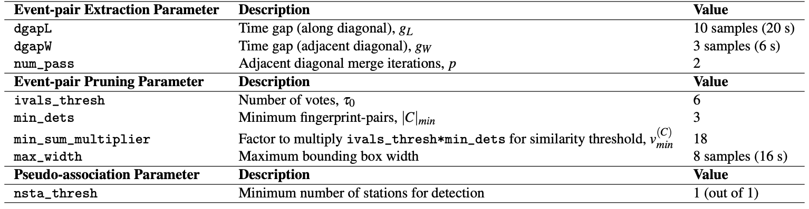
Network detection output file: /lfs/1/ceyoon/TimeSeries/BrazilAcre/network_detection/1sta_1stathresh_detlist_rank_by_peaksum.txt (14,477 events)
At this point, FAST earthquake detection processing is done.
0.9.5 Remove duplicates after network detection¶
Sort events in descending order of peaksum (peak similarity score between similar fingerprints) for the final detection list.
Output: sort_peaksum_1sta_1stathresh_CZSB_events.txt (14,477 events)
0.9.6 Visual inspection and final detections¶
Plot event waveforms in the final detection list, ranked in descending order of peaksum (peak similarity score between similar fingerprints), for visual inspection. Need to verify by looking at the waveforms that these are indeed earthquakes, and also enables setting final detection thresholds (peaksum ≥ 6).
Output: .png image files in 1sta_1stathresh_NetworkWaveformPlots/ (zip file)
Visual inspection shows that there are many false detections that do not look like earthquake waveforms (for example, event_rank00000_peaksum116351_ind854248_time1708496.0_2015-11-16T18/35/17.340000.png). However, some earthquake waveforms (for example, event_rank00049_peaksum26898_ind1297608_time2595216. 0_2015-11-27T00/53/57.340000.png) are also detected. I suggest running FAST on at least 3 stations for reliable earthquake detection.
14,474 events are above the arbitrary low threshold (peaksum ≥ 6).
EQ_sort_peaksum_1sta_1stathresh_CZSB_events.txt
For the 14,474 events, output a catalog-like formatted list:
Output: FINAL_Detection_List_BrazilAcre_1sta_1stathresh_peaksum6.txt (14,474 events)
0.10 New Zealand, Year 2010¶
Info
The objective of this study is to detect small earthquakes in New Zealand to test earthquake triggering hypothesis. Detection results, with input parameters, are described in Rong et al. [2018]. 1 year continuous data (2010), 5 seismic stations LTZ, MQZ, KHZ, THZ, OXZ (Figure 16, black triangles), vertical components only, sampled at 100 Hz. Detections were compared against the GeoNet catalog, and visually inspected. FAST detected 11419 events: 4916 catalog events (Figure 16, red circles), 355 teleseismic events, 6123 new local earthquakes and 25 false positives (noise waveforms).
0.11 Calipatria, June 2021¶